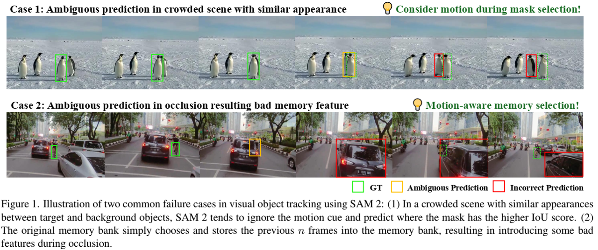

论文阅读三十九：SAMURAI：用于零样本视觉追踪的具有运动感知记忆的自适应SAM
摘要
分割一切模型 2（SAM2）在目标分割任务上已经展示强大性能，但在视觉目标追踪中面临挑战，尤其当处理具有快速移动或自遮挡的物体的拥挤场景时。此外，原始模型中固定窗口的记忆方法未考虑选择用于下一帧调节的图像特征的记忆的质量，导致视频中的误差传播。本文介绍SAMURAI，SAM2的增强适应性版，专为视觉目标跟踪而设计。通过结合时间运动线索和提出的运动感知记忆选择机制，SAMURAI有效地预测目标运动，并优化掩码选择，无需再训练或微调，取得稳健精确追踪。SAMURAI实时操作，并在各种基准数据集上展示强大的零样本性能，说明了它的无需微调的泛化能力。评估中，SAMURAI在现有追踪器的成功率和精度上取得显著改进， 上增益为 7.1%， GOT-10k上增益3.5%。而且，它相较于LaSOT上的全监督方法取得竞争性的结果，突出了它在复杂追踪场景的健壮性，以及它在真实世界动态环境应用上的潜力。代码和结果在： https://github.com/yangchris11/samurai 。
引言
分割一切模型（SAM）[26]已经在分割任务中展示深刻性能。最近，SAM2[35]结合流式记忆架构，实现序列化处理视频帧，同时保持长序列上的上下文。虽然SAM2已经展示了视频目标分割（VOS[46]）任务上的卓越能力，为视频序列中的目标生成精确的像素级掩码，它在视觉目标追踪（VOT[36]）场景中仍面临挑战。
VOT中的主要问题是保持一致地目标识别并定位，不管遮挡、外观变化和类似物体的出现。然而，SAM2常常忽略运动线索，当为后续帧预测掩码时，导致具有快速目标移动或咋复杂交互的场景中的不准确。这种限制在拥挤场景中尤其明显，其中SAM2在空间和时间一致性上倾向于外观类似，导致追踪错误。如图1所示，有两种常见错误模式：拥挤场景中的混乱和遮挡过程的低效的内存利用。

为此，我们提出SAMURAI，基于SAM的具有运动感知实例级记忆的统一和稳健的零样本视觉追踪器。我们提出的方法结合了两大关键进步：（1）运动建模系统，用于优化掩码选择，实现复杂场景中的更加准确的目标位置预测，和（2）一种优化的内存选择机制，利用混合分数系统，结合原始掩码亲和度、目标和运动分数来获得更加相关的历史信息，从而增强模型的整体追踪可靠性。
总而言之，本文做出以下贡献：
- 我们增强的SAM2的视觉追踪精度，通过结合运动建模中的运动信息，来有效处理快速移动和遮挡的目标。
- 我们提出了一种运动感知的内存选择机制，与原始的固定窗口内存相比，该机制通过选择性地存储由运动和亲和度分数混合决定的相关帧，减少了拥挤场景中的错误。
- 我们的零样本SAMURAI在LaSOT、LaSOText、GOT-10k和其他VOT基准测试上实现了最先进的性能，而无需额外的训练或微调，证明了我们提出的模块在不同数据集上的强大通用性。